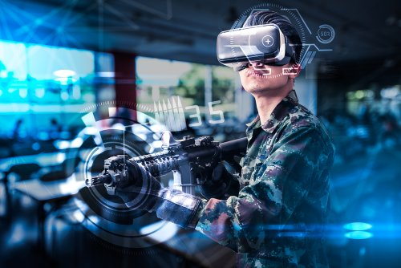

Apakah VR akan Menggantikan Android ?
Teknologi VR ini telah banyak dimanfaatkan di beberapa sektor industri seperti penerbangan, pendidikan, militer, kedokteran, hiburan, dan masih banyak lagi. Saat ini teknologi VR banyak diminati oleh para gamer yang ingin merasakan sensasi bermain game yang “nyata”. Banyak perusahaan-perusahaan teknologi yang sedang gencar dalam mengembangkan teknologi VR ini, contohnya Oculus VR dengan perangkat VR yang dikhususkan bagi para gamer yang bernama Oculus Rift.
Untuk menambah kesan “nyata” saat bermain game, ada beberapa perangkat yang membuat kamu semakin merasakan sensasi “nyata” terhadap apa yang ada di layar, diantaranya adalah kacamata VR yang berfungsi untuk memvisualisasikan gambar agar bisa terlihat nyata, headset yang berfungsi untuk mendengar efek-efek suara secara lebih jelas, juga walker dan sarung tangan (glove) yang memberikan reaksi kepada sistem tentang gerakan-gerakan yang dilakukan oleh kamu sehingga kamu seolah merasakan sedang berada dalam dunia nyata baik secara fisik maupun psikologis.